LLMs for Return Prediction: Prompts vs. Embeddings#
These notes draw on two papers that represent two fundamentally different approaches to using LLMs for stock return prediction:
Lopez-Lira, A., & Tang, Y. (2023). Can ChatGPT Forecast Stock Price Movements? Return Predictability and Large Language Models. SSRN Electronic Journal. https://doi.org/10.2139/ssrn.4412788
Chen, Y., Kelly, B., & Xiu, D. (2022). Expected Returns and Large Language Models. https://papers.ssrn.com/sol3/papers.cfm?abstract_id=4416687
Lopez-Lira & Tang take the prompting approach: ask ChatGPT directly whether a headline is good or bad for a stock, and trade on the answer. Chen, Kelly & Xiu take the embedding approach: extract the model’s internal numerical representations and feed them into a return prediction model. As we’ll see, both work — and they capture different information.
Slide images below are reproduced from the authors’ presentation slides. Sources: Lopez-Lira & Tang, “Can ChatGPT Forecast Stock Price Movements?”, 2024; Chen, Kelly, Xiu, “Expected Returns and Large Language Models,” 2023. For illustrative purposes only.
LLMs Are Statistical Prediction Models#
One important thing to keep in mind whenever we work with AI is that language models are not magic. They are not intelligence. They are statistical prediction models. If we can remember that, we’ll be able to make much better decisions about how to interact with them and how to learn from them.
Consider this real conversation with ChatGPT — a simple knock-knock joke:
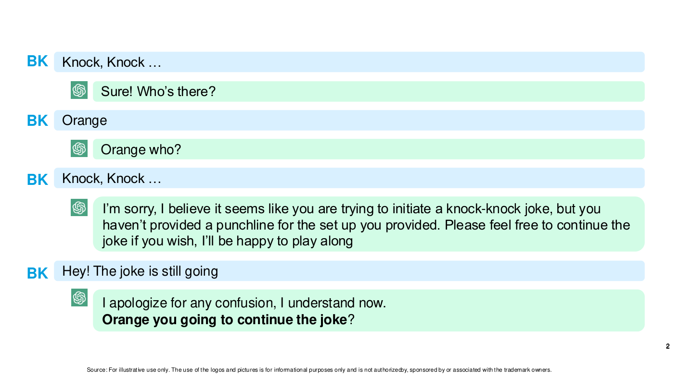
Source: Chen, Kelly, Xiu, “Expected Returns and Large Language Models,” 2023. For illustrative purposes only.
This is the classic “orange you going to continue the joke” setup — a play on the word “orange” sounding like “aren’t you.” What’s unusual about this joke is that it restarts in the middle. ChatGPT knows right away how to respond to “knock knock.” It knows to say “orange who?” But when the joke restarts, ChatGPT initially tries to correct the user, thinking the structure is wrong. After being told to bear with it, the model preempts the punchline: “Orange you going to continue the joke?”
The key insight here: GPT is trained to solve exactly this type of problem. It looks very similar to the kinds of problems we spend time on in finance. There’s a sequence, and the task is to forecast the next item in that sequence. If these were inflation prints, you’d say, “I know how to approach that — I’m going to build a statistical prediction model.” That is all GPT does. It approaches language with a statistical prediction model.
From Words to Numbers#
How do you do statistics on words? It’s actually straightforward. You give the computer a vocabulary and represent each word with an indicator variable — a big list of zeros except for a one in the position of the word you want to represent.
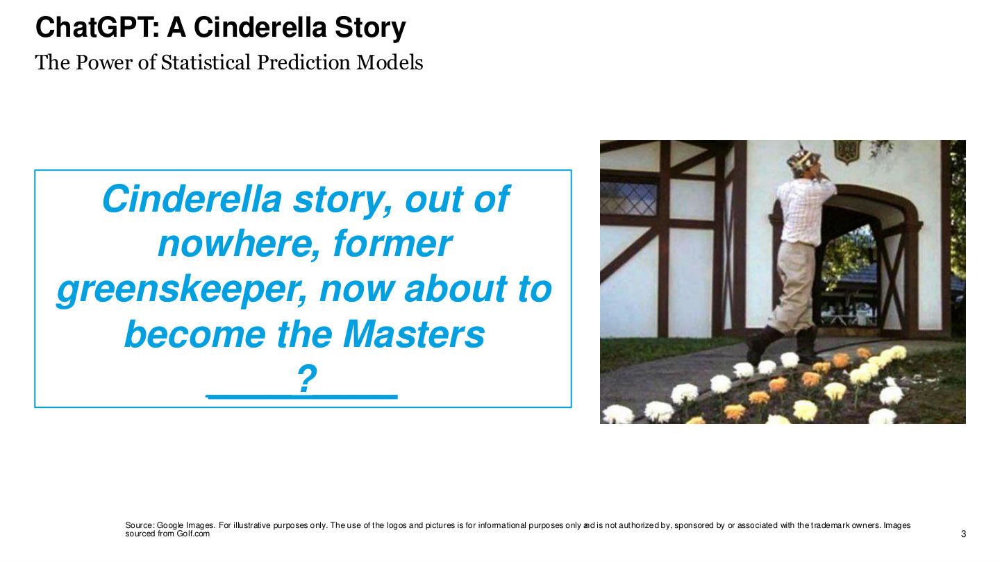
Source: Chen, Kelly, Xiu, “Expected Returns and Large Language Models,” 2023. For illustrative purposes only.
Using the famous Bill Murray quote from Caddyshack — “Cinderella story, out of nowhere, former greenskeeper, now about to become the Masters ___” — we can represent each word as one of these indicator vectors. Once we go from textual representations to numerical representations, we can do statistics again.
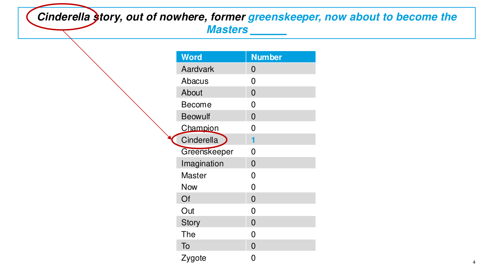
Source: Chen, Kelly, Xiu, “Expected Returns and Large Language Models,” 2023. For illustrative purposes only.
Just like forecasting a time series of inflation, we can try to build a model that relates past observations to future observations. We represent the sequence of words with a sequence of indicator vectors, and then we build a prediction model.
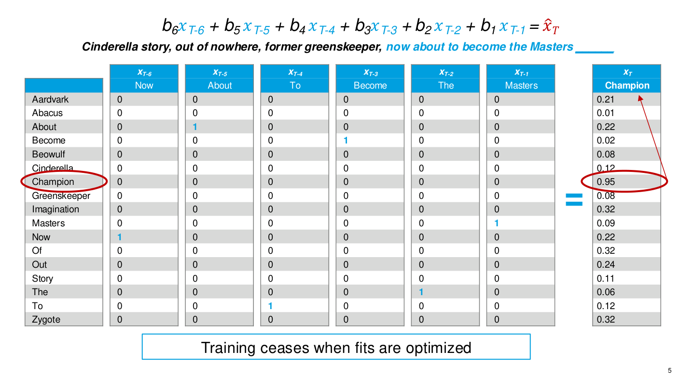
Source: Chen, Kelly, Xiu, “Expected Returns and Large Language Models,” 2023. For illustrative purposes only.
The model learns weights that, when applied to the indicator vectors of recent words, produce a probability distribution over the vocabulary for the next word. Training ceases when the model’s fits are optimized. In a nutshell, that is how language models work.
Training for Prediction#
This might seem too simple to be powerful. Why do language models work so well? Two reasons.
Reason 1: Extraordinary amounts of data. GPT was trained on about 500 billion observations. When we train our inflation models, we might have a couple hundred observations. 500 billion is hard for the human mind to comprehend. Consider this: Wikipedia alone would be enough to build a powerful language model, but it represents less than 1% of GPT’s training data. The model has seen essentially all of the freely capturable text on the internet — about 400 billion observations from Common Crawl alone — plus all of Google Books and other curated sources. It has seen enough examples to know nearly everything that can be said.
Reason 2: Massive model capacity. The model doesn’t look like a simple linear regression. Instead of a few parameters, it has a trillion parameters or more. With 500 billion observations and a trillion parameters, that’s about 200 parameters per data point. Each data point is a sequence of words followed by a masked word, and those 200 parameters can capture very subtle correlation structures in the word vectors. Language is extremely repetitive, so the effective number of parameters per unique pattern is much higher, allowing the model to memorize even obscure language patterns.
A Memorization Machine#
ChatGPT is a word prediction model. All language models are just word prediction models. There is no AI that exists that is anything other than a prediction model of some sort. It happens to be the case that language is interesting because if you memorize language, it makes for a pretty good chatbot. Language is so predictable — the signal-to-noise ratio is so high — that it’s really easy to guess the next word somebody is going to say. If you memorize past patterns, you start to look like a human talking.
The question is: can this work for investing?
ChatGPT and Investing#
Limitations of Prompt-Based Approaches#
One way to extract investment signals from language models is through prompts: feed some text into the model and query it with specific questions about the nature of that text. For example, you might give it a news article about Tesla and ask whether it’s a good investment.
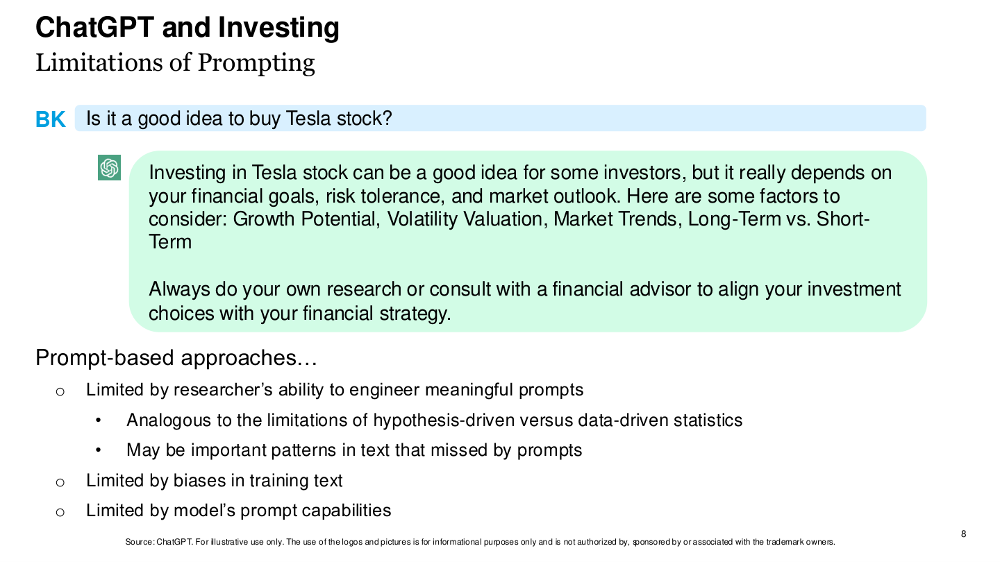
Source: Chen, Kelly, Xiu, “Expected Returns and Large Language Models,” 2023. For illustrative purposes only.
Prompt-based approaches can be powerful, but they have important limitations:
You need a researcher to design the prompts. Just like any model building in economics, your models are only as good as the researcher’s design. If you know the right questions to ask, prompt-based approaches could be optimal. But if you don’t know the right questions, they could totally miss the mark. This is analogous to the difference between hypothesis-driven and data-driven research — a bias-variance tradeoff. Prompts are highly biased models. They work if our biases happen to be correct, and they fail if they’re misspecified.
Biases in the training text. If you ask a specific question, you might mean something, but the way you use language might differ from how it was used in the model’s training data. You’ll get answers out, but they won’t correspond to what you were looking for.
Not all models support prompts. Many powerful language models don’t have the kind of prompt capabilities you might expect.
The Embedding Approach#
Instead of asking questions, there’s an alternative: go inside the model and extract its internal numerical representations.
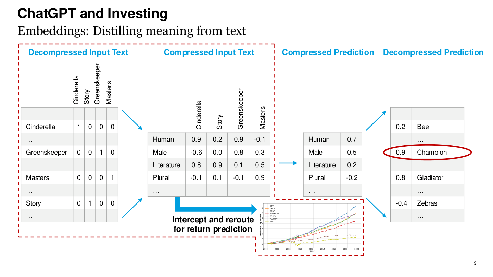
Source: Chen, Kelly, Xiu, “Expected Returns and Large Language Models,” 2023. For illustrative purposes only.
What do those trillion parameters in GPT actually do? They learn to take words and compress them down to their meaning. This meaning lives in a lower-dimensional space — analogous to principal components. Maybe “Cinderella” is not useful to think of as the word itself, but rather as living somewhere on a human spectrum, a gender spectrum, a literature-versus-reality spectrum, and so forth.
The model compresses language down to a numerical representation that tries to faithfully summarize what the content actually means. It has learned that the best way to forecast the next word is to first compress to a meaning representation, forecast the meaning of the next word, and only then decompress back to pick out a particular word.
The key insight: even before you ask a question, the model is already producing meaning representations of the text you feed it. So instead of asking “is this good news or bad news?”, you can go into the model and pull out the numerical representation directly, then reroute it into a statistical return prediction model. You don’t need a prompt to do this — you just need the capability to access the model’s internal representation.
Prompts vs. Embeddings#
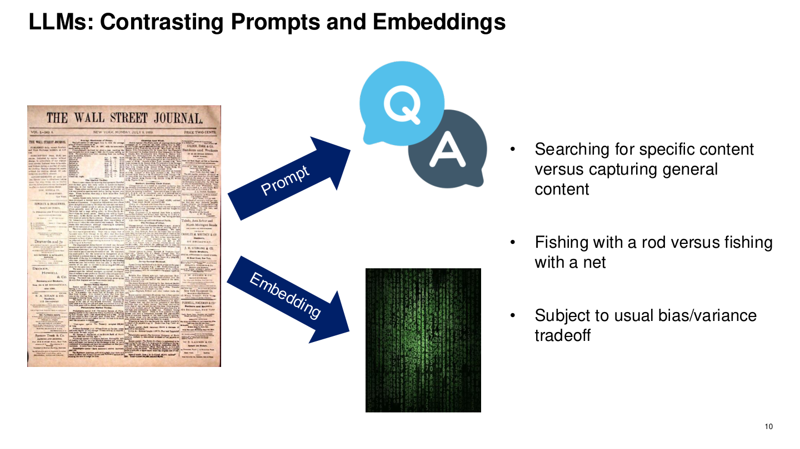
Source: Chen, Kelly, Xiu, “Expected Returns and Large Language Models,” 2023. For illustrative purposes only.
These two approaches can be thought of in several ways:
Searching for specific content vs. capturing general content. Prompts ask for specific things; embeddings capture a faithful numerical representation without asking for anything in particular.
Fishing with a rod vs. fishing with a net. A prompt is precise — if you engineer the right one, you can nail the answer without distraction. But if you don’t fully know what drives future returns (and who does?), you want an open-minded net.
Bias-variance tradeoff. The prompt approach is biased but can be precise. The embedding approach is less biased but may capture noise along with signal.
If you can engineer the right prompts, great. But if you’re willing to admit that you don’t fully know what drives future returns, then you want to capture information broadly and let the prediction model figure out what’s useful. That’s what embeddings do.
The Prompting Approach: Lopez-Lira & Tang (2023)#
Let’s explore the prompting road first. Lopez-Lira & Tang (2023) ask the simplest possible question: can you just ask ChatGPT whether a news headline is good or bad for a stock’s price, and trade on the answer?
The Setup#
The idea is disarmingly simple. Take a news headline about a company, feed it to ChatGPT through the API, and ask it to classify the headline as positive, negative, or neutral for the stock price. Then go long the stocks with good news and short the stocks with bad news.
A critical design choice: the sample period starts in October 2021, after GPT’s training data knowledge cutoff (September 2021). This avoids look-ahead bias — the model can’t have memorized the outcomes.
One thing to emphasize: this is not done through the ChatGPT chat interface. To run this at scale across thousands of headlines per day, you need the API.
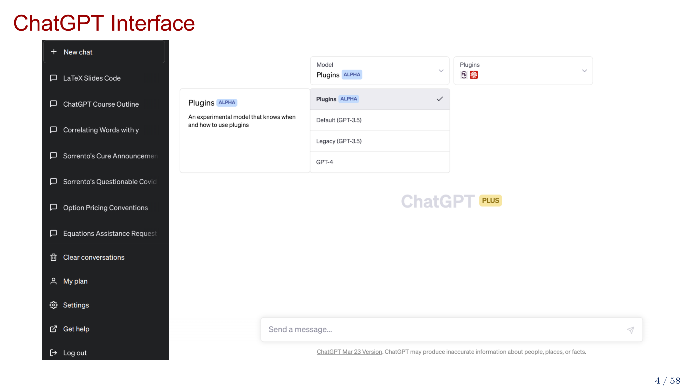
Source: Lopez-Lira & Tang, “Can ChatGPT Forecast Stock Price Movements?”, 2024. For illustrative purposes only.
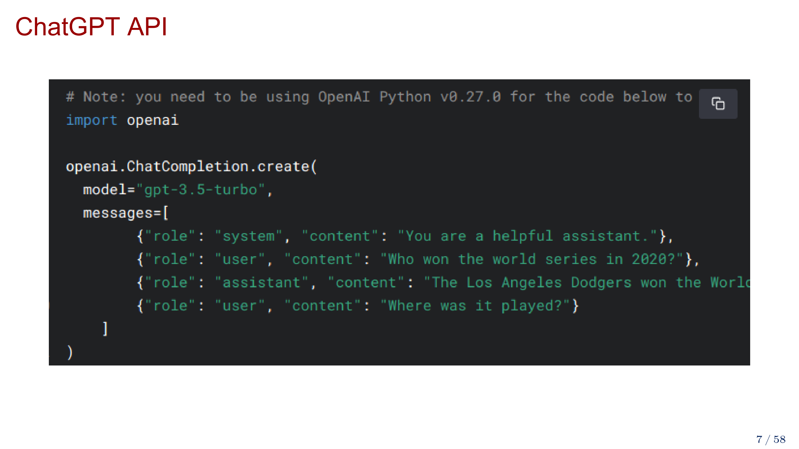
Source: Lopez-Lira & Tang, “Can ChatGPT Forecast Stock Price Movements?”, 2024. For illustrative purposes only.
The Prompt#
The prompt is straightforward:
Forget all your previous instructions. Pretend you are a financial expert. You are a financial expert with stock recommendation experience. Answer “YES” if good news, “NO” if bad news, or “UNKNOWN” if uncertain in the first line. Then elaborate with one short and concise sentence on the next line. Is this headline good or bad for the stock price of _company_name_ in the _term_ term?
Headline: _headline_
For example, given the headline “Cigna Calls Off Humana Pursuit, Plans Big Stock Buyback”, the prompt asks whether this is good or bad for Humana in the short term. GPT-4 responds:
NO. The termination of Cigna’s pursuit could potentially decrease Humana’s stock price as it may be perceived as a loss of a potential acquisition premium.
This is a sensible answer — the kind of reasoning you’d expect from a finance professional. The model understands that losing an acquirer is bad for the target’s stock, despite the headline containing the positive-sounding word “buyback” (which applies to Cigna, not Humana). A simple dictionary-based approach would likely get this wrong.
Results#
The strategy works. A long-short portfolio based on GPT-4’s assessments of overnight news turns \(1 into roughly \)7 over the sample period (October 2021 to early 2024), before transaction costs.
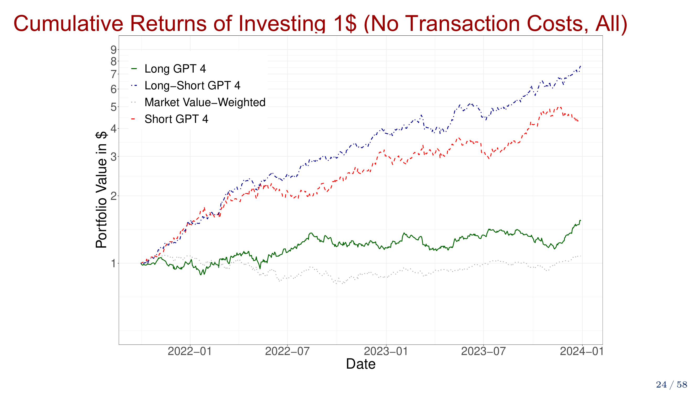
Source: Lopez-Lira & Tang, “Can ChatGPT Forecast Stock Price Movements?”, 2024. For illustrative purposes only.
The long-short strategy achieves an annualized Sharpe ratio of 3.28. Most of the predictability comes from the short side, consistent with limits-to-arbitrage arguments — it’s harder to trade on bad news, so the signal persists longer.
A key finding: financial reasoning is an emerging capacity of larger language models. The table below shows that GPT-4 dramatically outperforms smaller models. GPT-1, GPT-2, and FinBERT actually have negative Sharpe ratios — they’re worse than random. Only models above a certain complexity threshold can predict returns with the correct sign.
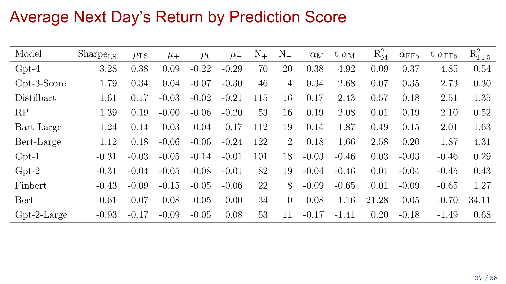
Source: Lopez-Lira & Tang, “Can ChatGPT Forecast Stock Price Movements?”, 2024. For illustrative purposes only.
Markets Learning#
An important question: does this predictability persist? As LLMs become widely adopted, you’d expect markets to incorporate information faster, reducing the exploitable signal. Lopez-Lira & Tang find evidence of exactly this — the annualized Sharpe ratio of the overnight news strategy has been declining over time, from roughly 6 in late 2021 to about 2 by 2023.
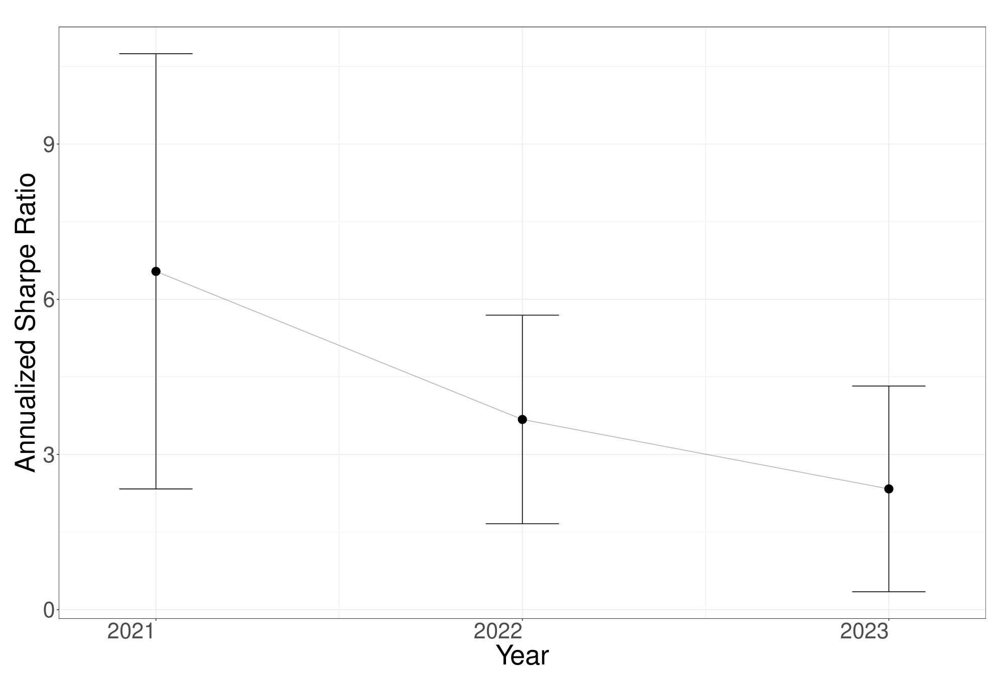
Source: Lopez-Lira & Tang, “Can ChatGPT Forecast Stock Price Movements?”, 2024. For illustrative purposes only.
This is consistent with market efficiency improving as more participants adopt these tools. The signal is real, but it’s being competed away.
The Embedding Approach: Chen, Kelly & Xiu (2022)#
Now let’s turn to the embedding approach, which takes a fundamentally different path. Rather than asking a question and getting a text answer, Chen, Kelly & Xiu go inside the model and extract its internal numerical representations.
Empirical Approach#
Data#
The empirical analysis uses about 25 years of news text for single-name companies from Thompson/Reuters Refinitiv — a large, dense dataset with typical newswire data, press releases, and more.
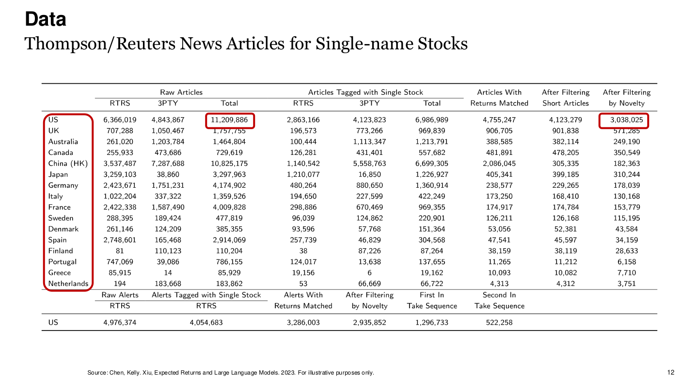
Source: Chen, Kelly, Xiu, “Expected Returns and Large Language Models,” 2023. For illustrative purposes only.
One particularly interesting aspect of the data is its international coverage. There is substantial data across many countries, including foreign-language news. From the perspective of most large language models, the language doesn’t really matter — these models are polyglot by nature.
Prediction Methodology#
The paper considers a wide range of language models, not just ChatGPT. There is an entire universe of language models produced by different teams, with different assumptions, but they all share the same basic structure: take in text, run it through a prediction structure (usually many layers of sophisticated neural networks), and somewhere before producing a word forecast, maintain an internal numerical representation of useful information.
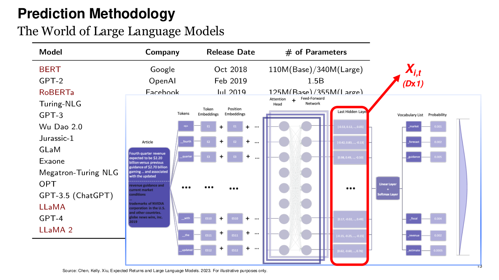
Source: Chen, Kelly, Xiu, “Expected Returns and Large Language Models,” 2023. For illustrative purposes only.
For each model, the approach is to go into the model and pull out the embedding layer — typically the last numerical representation at the end of the neural network. Once a news article is fed into a language model, out comes a vector of predictive signals, typically about a thousand dimensions. That vector is the “net” that summarizes the information content of the article.
Expected Returns#
Once we have the embedding vector \(x_{i,t}\) for each article, the rest is straightforward — build return prediction models as with any other numerical data. The paper looks at two prediction tasks:
Sentiment analysis — treated as a classification problem: \(E(y_{i,t} | x_{i,t}) = \sigma(x'_{i,t} \beta)\), where \(y_{i,t}\) is a binary label (the sign of three-day cumulative returns surrounding the news event).
Return prediction — treated as a panel regression: \(E(r_{i,t+1} | x_{i,t}) = x'_{i,t} \theta\), where \(r_{i,t+1}\) is the return of stock \(i\) on day \(t+1\).
For the high-dimensional embedding features, ridge regression is used. Alternatively, a neural network model can be employed.
Pre-LLM Benchmarks#
Before LLMs, there were simpler text-based methods for financial prediction.
Bag-of-Words Methods represent an article as a vector of word counts:
LMMD (Loughran & MacDonald, 2011): A hand-constructed finance sentiment dictionary. Researchers at Notre Dame built their own dictionary more relevant for finance than the general-purpose psychological dictionaries that came before. The advantage: no estimation required — the sentiment weights come from the dictionary itself.
SESTM (Ke, Kelly, & Xiu, 2020): A machine learning topic-sentiment model that generalizes dictionary methods by building a custom dictionary problem by problem, learning what goes in the dictionary and what weights to assign.
Early Word Embeddings are a more sophisticated “PCA” of word indicator vectors:
Word2vec (Mikolov et al., 2013): A two-layer neural network model to generate embedding vectors.
These are all word-level methods. They don’t know anything about the context in which a word is used. What’s really powerful about LLM embeddings is that they take into account things like negation, subtlety, and context within an entire document.
Daily Predictions#
Portfolio Performance#
Using a rolling training window, the model estimates coefficients on the embeddings. Then, one period out of sample, new articles arrive, and these coefficients are applied to the embeddings of the new articles. The resulting expected returns serve as a signal for sorting stocks into decile long-short portfolios.
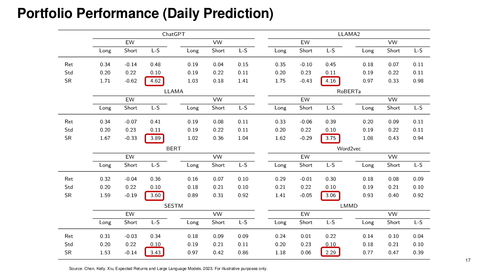
Source: Chen, Kelly, Xiu, “Expected Returns and Large Language Models,” 2023. For illustrative purposes only.
The results are striking. The annualized Sharpe ratios for equal-weighted strategies show that this is a powerful way to extract information from text. ChatGPT achieves a Sharpe ratio of 4.62, LLAMA2 reaches 4.16, and even simpler models like BERT and Word2vec show ratios above 3. The LLM-based methods consistently outperform the traditional word-based approaches (SESTM at 3.43, LMMD at 2.29).
These daily Sharpe ratios should be interpreted as measures of predictive association — the extent of predictability in the data — rather than as tradable strategies, since daily trading at scale is difficult.
Polyglot Portfolios#
Since LLMs can embed news articles in any language, the same methodology works across countries.
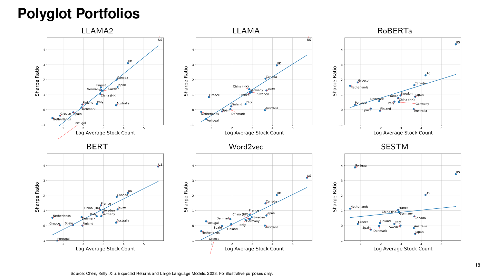
Source: Chen, Kelly, Xiu, “Expected Returns and Large Language Models,” 2023. For illustrative purposes only.
A clear pattern emerges: the more stocks available in a given country, the better the trading strategy performs. More data means better training for the return prediction models. This relationship is strongest for the LLM-based methods (LLAMA2, LLAMA, RoBERTa) and weaker for traditional word-based methods (Word2vec, SESTM).
Nonlinear Prediction#
If embeddings contain rich information, should they only be used in linear models? Why not consider nonlinear functions — tree-based methods or neural networks?
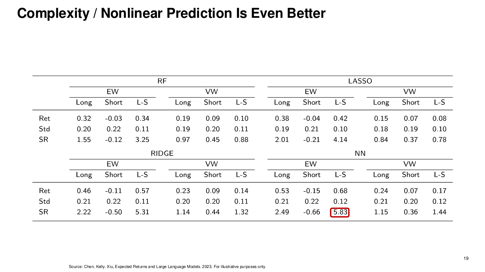
Source: Chen, Kelly, Xiu, “Expected Returns and Large Language Models,” 2023. For illustrative purposes only.
It turns out there is a lot of richness in these vectors. Using them in a linear way understates the amount of accessible information. With a neural network-based method, the Sharpe ratio climbs from about 4.7 to 5.83. The embeddings contain nonlinear predictive content that simple linear models leave on the table.
Why Do LLMs Outperform Word-Based Methods?#
The key difference is context. Word-based methods don’t know the context in which a word is used. How can we demonstrate this?
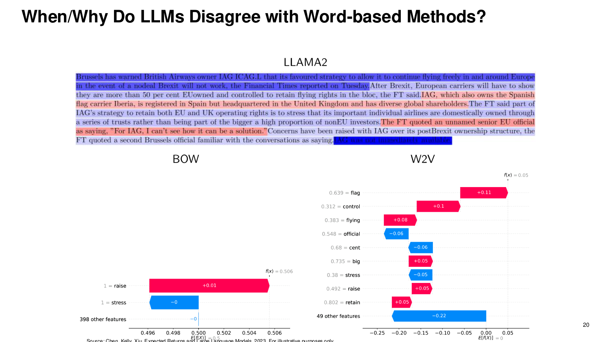
Source: Chen, Kelly, Xiu, “Expected Returns and Large Language Models,” 2023. For illustrative purposes only.
Consider this news article about British Airways and Brexit. The word “raise” shows up — in any dictionary-based approach, “raise” is a typical signal for a strong future return. But in this article, it’s talking about “raising issues” regarding British Airways’ ability to operate in the EU after Brexit. A bag-of-words model scores this as a very positive article, but the actual sentiment is negative. The context-based LLM methods correctly interpret the usage.
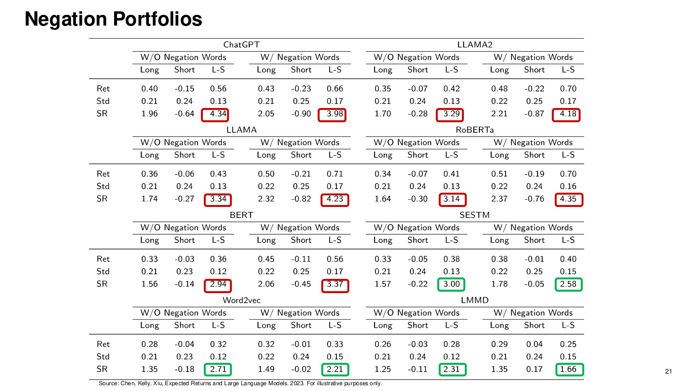
Source: Chen, Kelly, Xiu, “Expected Returns and Large Language Models,” 2023. For illustrative purposes only.
To test this systematically, the paper separates articles with and without negation terms (“not,” “didn’t,” etc.). For the more sophisticated LLM-based models (shown in red boxes), performance doesn’t differ much between articles with and without negation — negation doesn’t give them a hard time. But for word-based methods, there is a significant degradation when negation terms are present. This confirms that context understanding is a major advantage of LLM embeddings.
Monthly Predictions#
Multi-Frequency Signal#
A natural question about daily signals: are they implementable? Daily trading at scale is hard. But it turns out there are multiple frequency components in the text-based signal.
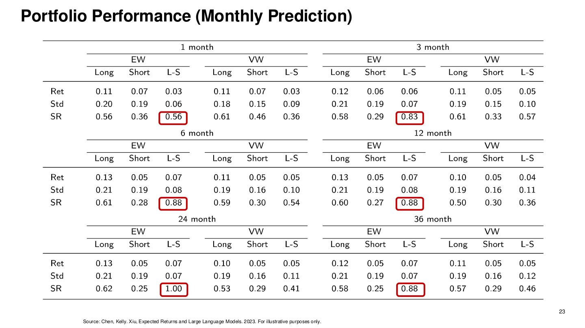
Source: Chen, Kelly, Xiu, “Expected Returns and Large Language Models,” 2023. For illustrative purposes only.
When forecasting one month ahead, using only the most recent day’s news produces no monthly profitability — the signal decays too quickly. But as you start averaging embeddings over longer and longer periods (3 months, 6 months, 12 months, up to 36 months), the performance of the monthly trading strategy improves. The Sharpe ratio peaks around 12-24 months of lookback.
This reveals something interesting: there are two prominent frequencies in text data. One signal moves around very quickly (daily), and another moves much more slowly — something like business cycle frequencies. The slow-moving signal can be captured and traded on at monthly horizons out of sample.
Multiple Models#
Diversity Across Language Models#
A major advantage of the current landscape is that there isn’t just one language model. Different models are built by different teams with different assumptions, and they produce different trading strategies.
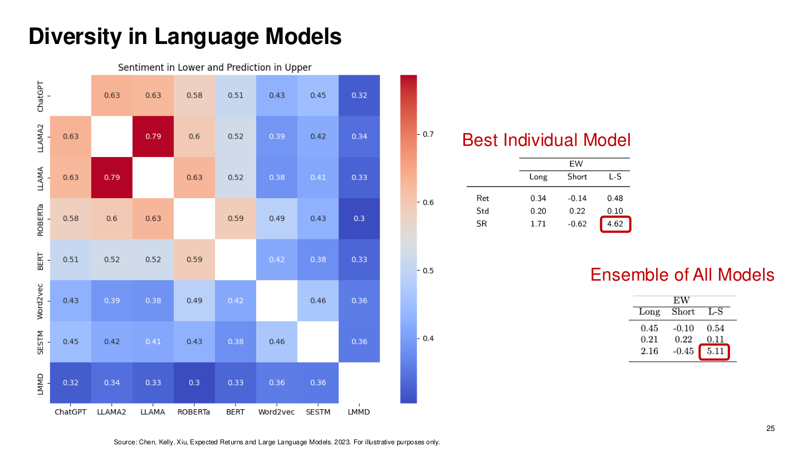
Source: Chen, Kelly, Xiu, “Expected Returns and Large Language Models,” 2023. For illustrative purposes only.
The correlation matrix of returns across long-short strategies reveals meaningful diversity. ChatGPT and LLAMA strategies are about 60% correlated. Even two versions of LLAMA produce strategies that are only about 80% correlated. The traditional bag-of-words approaches (SESTM, LMMD) are even less correlated with the LLM-based strategies.
Importantly, these models don’t displace word-based methods, and word-based methods certainly don’t displace LLMs. They all give different perspectives on what the language in an article has to tell you. This is a reflection of statistical complexity: these models are not trained for returns — they’re trained to predict words. By the time we translate them into return predictions with finite financial data, different models learn different things.
The upshot: when you have a bunch of strategies with high Sharpe ratios and partial correlations, put them together. A simple equal-weighted ensemble of all models achieves a Sharpe ratio of 5.11 — better than the best individual model (4.62). A more sophisticated ensemble would do even better.
Conclusions#
Source: Chen, Kelly, Xiu, “Expected Returns and Large Language Models,” 2023. For illustrative purposes only.
The main takeaways from these two papers:
From Lopez-Lira & Tang (prompting approach):
Prompting is simple and effective. Just asking ChatGPT “is this good or bad news?” produces a tradable signal with a Sharpe ratio of 3.28.
Financial reasoning is an emerging capacity. Only models above a certain complexity threshold (GPT-3.5 and above) can predict returns with the correct sign. Smaller models like GPT-1, GPT-2, and FinBERT fail completely.
Markets are learning. The Sharpe ratio of the prompting strategy has been declining as LLM adoption increases, consistent with improving market efficiency.
From Chen, Kelly & Xiu (embedding approach):
Embeddings from LLMs are effective. They provide a comprehensive numerical representation of all the meaning in text — not specific meaning, but all of it. The embedding acts as an open-minded funnel for capturing many different potential predictors for returns, without needing to know the nature of the text-based predictors in advance.
Strong out-of-sample success compared to existing predictive signals in the literature.
Larger LLMs perform better on average.
Polyglot methodology. The approach works across languages and countries.
Multiple frequencies in news signals. There is both a fast (daily) and slow (business cycle) return prediction component in news text.
Many models to choose from. Not all are accessible with prompts. The best strategy is an ensemble of many LLMs.
Across both papers:
Combination of approaches is likely optimal. There are benefits to both prompt-based and embedding-based approaches. This is a finite-data setting, and Bayesian approaches that combine prior information (prompts) with data-driven models (embeddings) tend to dominate out of sample.